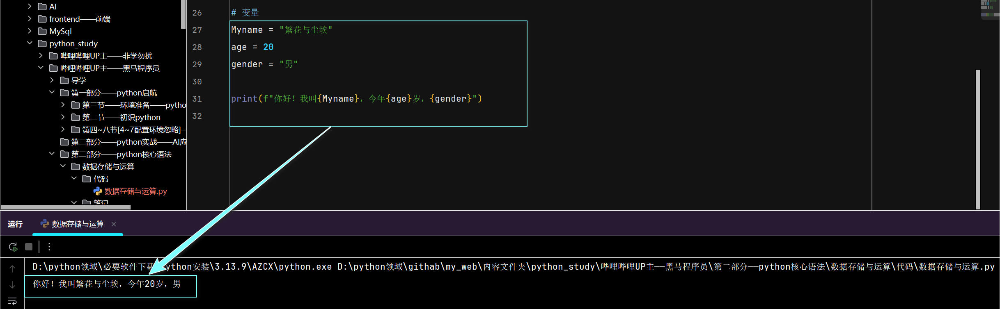

数据存储与运算
学习笔记
-
字面量与变量
-
字面量
- 字面量：指程序中，直接书写的固定值(数据),就称为字面量
- 字面量有许多种类，每个种类的写法不同
-
字面量的种类以及写法
字面量类型书写格式 数字类型 整数( int)例子： 10 18 -5 0浮点数/小数( float)例子： 8.5 3.14 1.0 -3.5布尔( boolJavaScript叫(boolean))表达现实生活中的逻辑。真或假 1.python(大写)： True/False
2.JavaScript(小写)：true/false
3.与JavaScript一致，True/true <===> 1False/false <===> 0
4.但是python布尔是(int)类型的子类，它们就是1/0另外一种写法
5.而JavaScript是通过 隐式转换而成1/0
6.这就引出了后续运算符的：
1)进行数学运算，自动True 为 1，False 为 0
2)python的==与JavaScript的===/==的区别字符串( str)JavaScript叫(String)描述文本的一种数据类型 1.例子："人生苦短，我用python"
2.所有双引号或单引号包裹的均是str/String类型空值( NoneType注意：与JavaScript的undefined/null并不完全相似)表示空或无值，仅包含一个值 None1.None
2.Python的None更像是null（人为的空），
但 JavaScript还有undefined（未定义），None 没有这种双重性。数据容器 存储多项数据的容器 1.列表 list：
类似JavaScript的：Array数组
2.元组tuple：
类似JavaScript的：object.freeze()冻结的数组
3.集合set：
类似JavaScript的：new Set()无序、元素唯一的数组
4.字典dict：
类似JavaScript的：object对象重要：输出字面量的数据类型发放 python：
1.方法一：type(字面量)，返回值是：该数据的类型，不包括数据自身
2.方法二：isinstance(数据,类型),返回值是：布尔值
3.注意：方法二：有两个参数，第一个为 数据，第二位要判断的 数据类型
4. python没有JavaScript需要多个方法配合,它的方法可以直接返回具体数据类型和判断1.在 JavaScript中，输出字面量数据类型 不是方法也不是属性
2.是一个一元运算符,写法是：typeof 字面量，注意要空格
3.当然写typeof(字面量)也不会出问题，但是建议使用第一种
4.typeof，只能解析基本数据类型，但不包括null
对于null、Array、Set、object...均返回object -
注释
注释写法 语言 单行注释 多行注释 python#1.例子： # 学习python
2.总结：就是在符号后，当前行内，为注释(不能换行)三单引号或三双引号 1.例子： """学习python"""或'''学习python'''
2.总结：只要在符号内，均是注释，可以换行JavaScript//1.例子： // 学习JavaScript
2.总结：就是在符号后，当前行内，为注释(不能换行)/* */1.例子： /* 学习JavaScript */
2.总结：只要在符号内，均是注释，可以换行MySQL--1.例子： -- 学习MySQL
2.注意符号后面必须要有一个空格
3.总结：就是在符号后，当前行内，为注释(不能换行)/* */1.例子： /* 学习MySQL */
2.总结：只要在符号内，均是注释，可以换行
-
变量
- 变量：程序中用来存储单个数据的容器，通常会把经常发生变化的数据存储在变量中
- 注意：变量是指存储数据的容器(空间)，而不是容器里面存储的数据(字面量)
-
变量的格式
变量的格式 语言 变量格式(单个赋值) 变量格式(同时赋值多个变量) 交换 python格式： 变量名 = 变量值(可以理解为字面量)1.例子： name = "繁花与尘埃"
2.注意：与JavaScript不同的是：它不需要声明
3. 具体流程是：等号右边的值，赋值给左侧变量名
4. 可以通过重新赋值，更改容器内的数据
5. 当然也可以通过变量名，访问容器内的数据
6. 是动态类型语言，一个变量可以赋值不同类型的字面量
但是：在一个项目中，不建议，一个变量存储不同类型字面量，最好新建变量存储。
格式：
1.变量名,变量名,... = 变量值,变量值,...同时赋值多个变量1.例子： name,age = "繁花与尘埃",20
2. 赋值顺序与变量名一一对应，如上：name = "繁花与尘埃"，age = 20
3. 每一个变量名与变量值，用逗号隔开格式： 变量1,变量2 = 变量2,变量1
前提是：变量已赋值例子： a,b = 100,20 [交换==>]a,b = b,aJavaScript格式： 声明 变量名 = 变量值(可以理解为字面量)1.例子： let name = "繁花与尘埃"
2. 注意：JavaScript声明关键字有3个：let/const/var
3. 与python的区别是：他需要先声明
4. 具体流程是：等号右边的值，赋值给左侧变量名
5. 可以通过重新赋值，更改容器内的数据
6. 当然也可以通过变量名，访问容器内的数据
7. 是动态类型语言，一个变量可以赋值不同类型的字面量格式：
1.声明 [name,age] = ["繁花与尘埃",20]称为：数组解构
2.声明 {name,age} = {name:"繁花与尘埃,age:20}称为：对象解构例子：
1.let [name,age] = ["繁花与尘埃",20]
2.let {name,age} = {name:"繁花与尘埃,age:20}
注意：
1)JavaScript并没有像python一样的创建多个变量的同时分别赋值
但是：SE6新增了，解构赋值这个概念，使用它可以达到类似的效果
2) 常见的解构赋值有：数组解构，对象解构，函数解构，字符串解构，Set解构，Map解构....格式： [a,b] = [b,a]
前提是：变量已赋值例子： [name,age] = [20,"繁花与尘埃"]
交换==>[name,age] = [age,name]
-